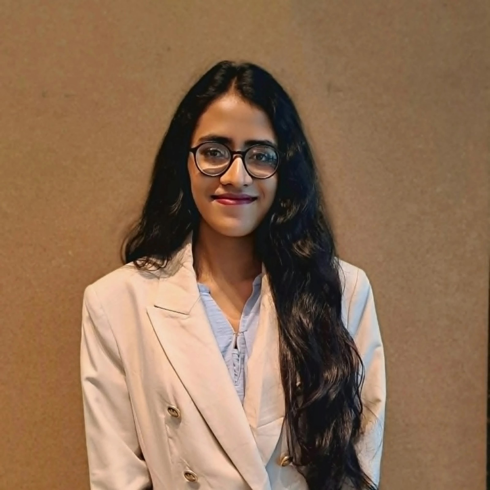
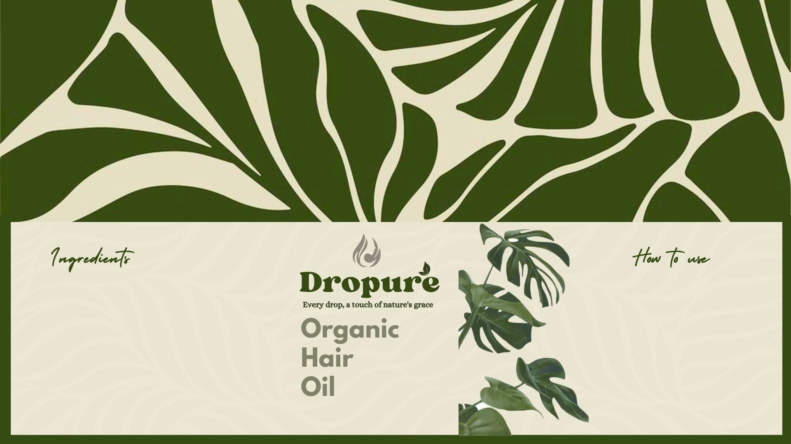
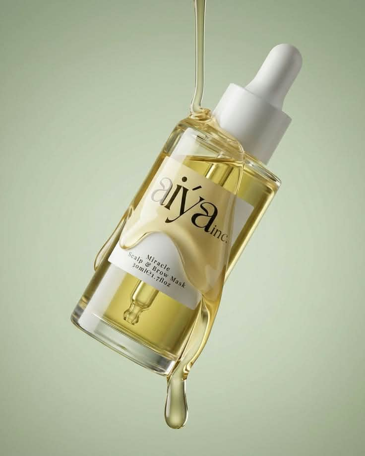
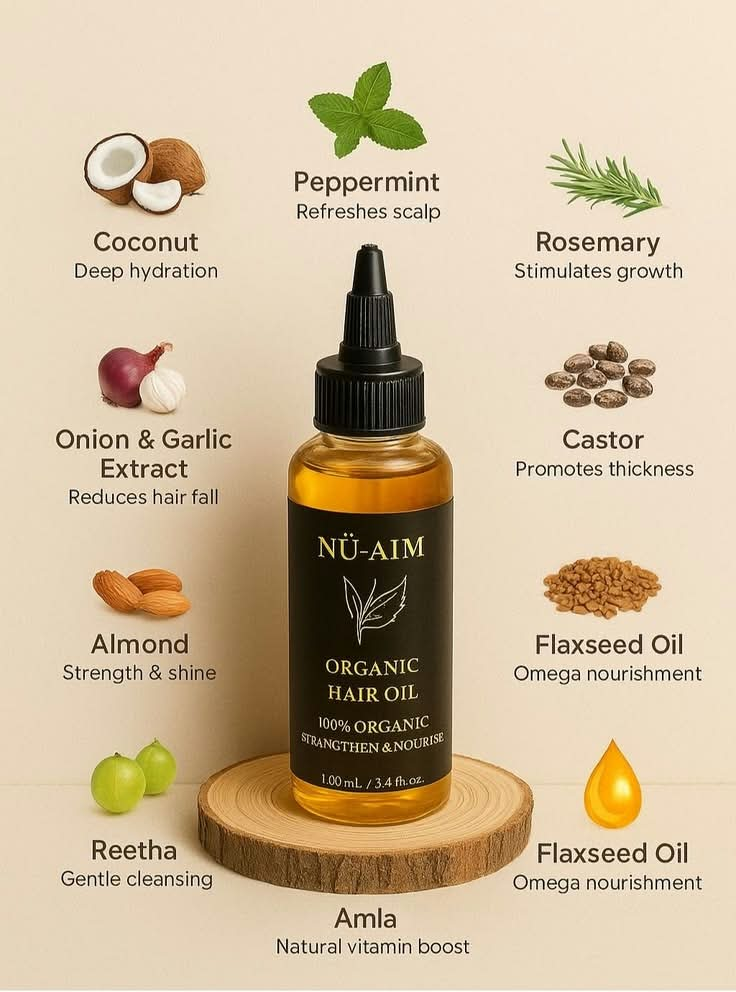

9:16 · Story reel
Reel 01
Aspire Ambassador story reel
Vertical, fast-cut recruitment story built from event stills, speaker moments and on-camera reactions for Banglalink’s Aspire programme.
I plan the campaign — then I pick up the camera. Marketing student, event storyteller, and a believer that good content starts before anyone presses record.

Great content is planned like a campaign and felt like a moment.
I’m a final-semester BBA student at Brac University, majoring in Marketing with a minor in MIS. I came to marketing through events and stayed for the moment an idea finally looks right on screen.
Over the past few years I’ve organised seminars that drew 300+ people, run a monthly content calendar as Creative Marketing Director at Little Drop Media, and spent a year as a Banglalink Aspire Ambassador turning campus activations into stories worth sharing.
I care about the parts of production most people don’t see: the shot list, the angle, the tidy folder of footage a team can actually use. Healthcare is a field where clear communication matters more than almost anywhere, which is exactly why Commure’s mission pulls me in.
students connected to Banglalink’s opportunities through targeted digital outreach
participants in EXCELERATE, the club’s first national competition, which I initiated
average attendance at seminars with bKash, Banglalink, PRAN, Bangladesh Bank & more
TEDxBRACU participants, with speaker and industry outreach across sectors
Vertical, fast-cut recruitment story built from event stills, speaker moments and on-camera reactions for Banglalink’s Aspire programme.
Event coverage in vertical format: set details, group moments, stage and speaker shots, stitched into one short story.
A small business came to us with a traditional hair-oil recipe built from 20+ natural ingredients, and no brand around it. The goal: make something that feels handed-down and honest, yet looks right on a modern shelf.
Early boards and the packaging references that shaped the direction. The refined system is on the right.



Digiteracy is an initiative under Najmul Hasan (Associate Professor, Brac University) to build digital and technology literacy among school students in Bangladesh, by making technology concepts simple and approachable for younger audiences.
It let me combine the two things I enjoy most: understanding an audience, and building a brand around what they actually need.
Roads for information, explained in one minute.
Small habits for safer browsing.
Colour direction and sample cards are illustrative concepts showing how the brand could present itself; the platform has not launched.
Ran on-campus campaigns and activations, collected student feedback, and led digital outreach that connected 500+ students to opportunities. Brought 3 universities together for one unified event and lifted a seminar to 1,200+ online reach and 300+ in-person attendees.
Led corporate outreach and seminars averaging 300+ attendees with bKash, Shanta, Banglalink, PRAN, KDS and Bangladesh Bank. Initiated EXCELERATE, the club’s first national competition, with 650+ participants.
Owned content workflows and monthly content calendars aligned to brand goals, and managed stakeholder communication, scheduling and creative approvals through delivery.
Developed PR, marketing and outreach strategies for campaigns and programmes, and connected industry experts with LEAD Academy.
Supported branding and PR for client campaigns, client communications, scheduling and internal coordination.
Planned event schedules and logistics, networking events and guest lectures, and pitched sponsorships to build long-term company partnerships.
Led outreach to industry leaders across business, art, agriculture and sports for TEDxBRACU’s 340+ participants.
Event photography, vertical video and B-roll on whatever camera is in my hand.
Fast, clean short-form edits and on-brand graphics, from story reels to brand boards.
Monthly calendars, approvals, shot lists and timelines.
Reporting, decks and basic Python from DataCamp.
Partnerships, speakers and stakeholder communication.
Sit with Marketing & Communications to nail the message, the audience, and what a viewer should feel in the first three seconds.
Shot list, locations, equipment and timings written down before anyone arrives, so people’s time is respected.
Interviews, workplace moments and B-roll, framed for both widescreen and vertical so one shoot feeds many posts.
Footage named, sorted and backed up, with a rough cut and notes so the team can pick it up without asking.